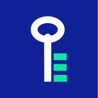
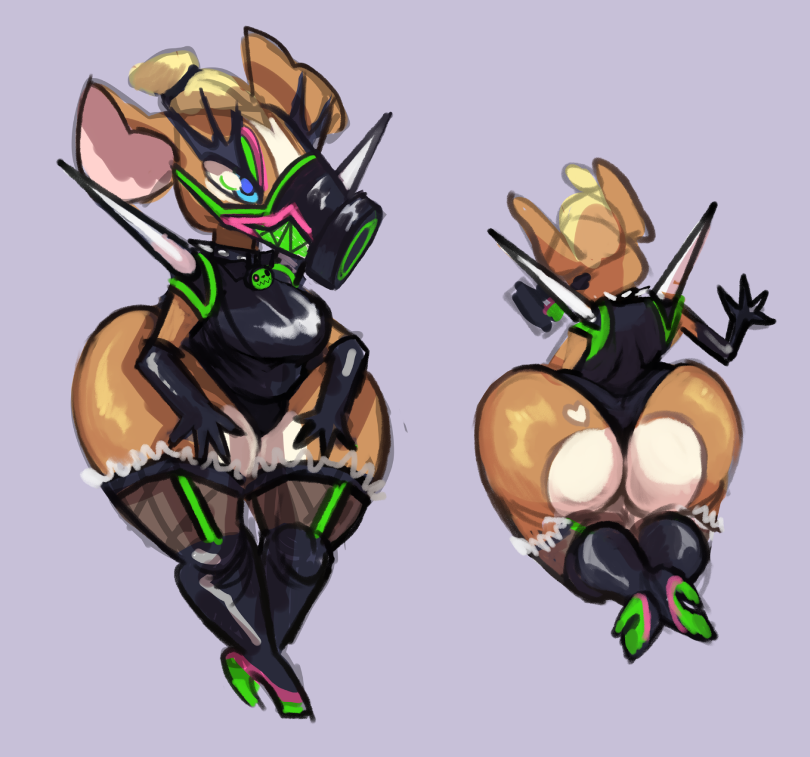
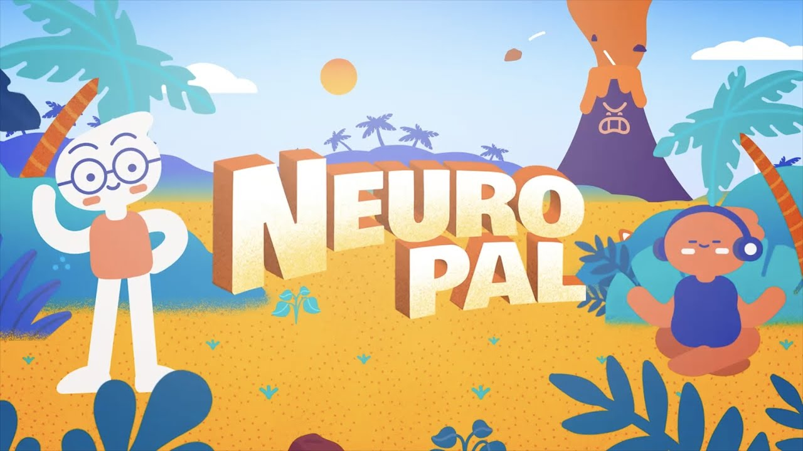
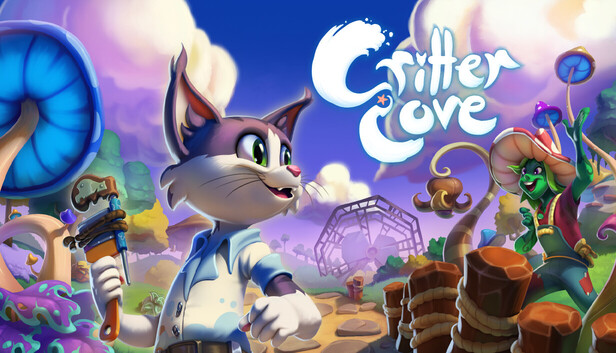
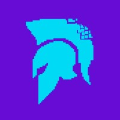
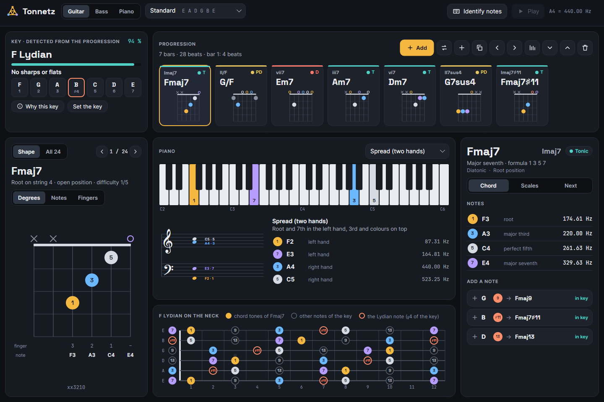
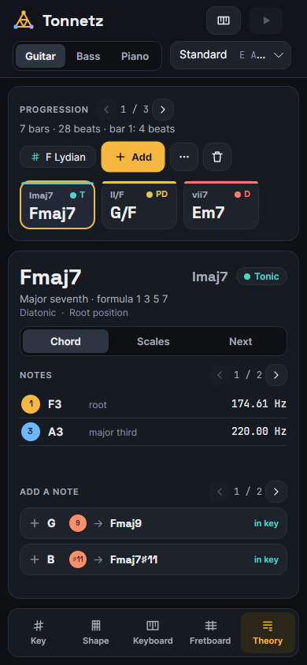
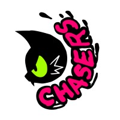
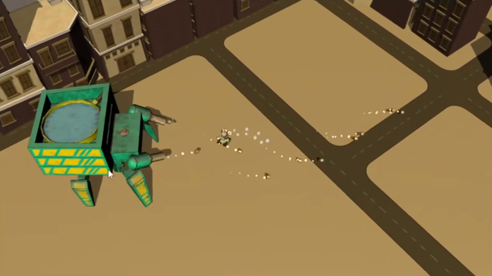

~2 weeks → ~2 h
Time for a school to build its timetables, after Cronos AD replaced the manual process
Unity Developer · C#/.NET Developer · Porto Area, Portugal
4.5 years of Unity development across WebGL learning platforms, mobile games and an indie roguelike. Since 2026 I also build C#/.NET desktop software for a school, in production, using AI-assisted development.
I take over unfinished projects and get them out the door, fix what blocks a release, and turn requirements from non-technical people into working features.
~2 weeks → ~2 h
Time for a school to build its timetables, after Cronos AD replaced the manual process
390 lessons in 1.7 s
Weekly lesson blocks scheduled for 46 teachers, 20 classes and 16 subjects
359 → 170 MB
Mobile build size of Neuropal, before publishing on the App Store and Google Play
~8 s → ~2 s
Initial load of a WebGL learning platform after moving content to streamed Addressables
Figures with ~ are estimates from the time; the others come from recorded runs or builds.
Experience
Freelance · Remote
Cronos AD · private school in Brazil
01/2026 – present
Sole developer of a desktop suite for a school, with the school manager defining what it needs. Cronos AD generates the school's timetables and formal schedule documents and is used by its staff. I own the technical side end to end: features, architecture, testing and releases. Claude writes most of the code; I decide what gets built, how it fits together, and whether it works.
Employee · Remote (UK)

FakeDoor · 3D learning platform for schools (WebGL)
03/2024 – 02/2025
Second developer in a Unity team of four (a lead, me, two juniors), building interactive 3D lessons for the browser alongside an art team and a teacher who wrote the content.
Product under NDA.

Contract · Portugal
Neuropal · Associação Viver a Ciência, with Instituto de Medicina Molecular
07/2022 – 07/2023
A free educational game about safety and the nervous system, made to help young players avoid spinal cord injuries, in English, Spanish and Portuguese. I took it over from the previous contractor as the only programmer: unpublished, with bugs, and with the original developers gone.

Contract · Portugal
Gentleman Rat Studios · Critter Cove
04/2023 – 09/2023
One of two developers on Critter Cove, an open-world life sim and town builder, during pre-release development. The game later entered Early Access on Steam.

Research fellowship · Manaus, Brazil

Saltu (previously Ludus) · corporate-funded R&D game lab
11/2019 – 01/2022
A lab of more than 20 people (researchers, developers, artists) funded by a large company from the Manaus Industrial Pole that was entering the mobile-phone market. We built games and tested them on the sponsor's phones and other devices.
Sponsor and games under NDA.
Projects
Personal · 2026 · Windows and Android
A chord, scale and harmony app for guitar, bass and piano, running on Windows and Android from one codebase. It replaces an older web tool of mine that had chord shapes typed in by hand; here every chord, shape and voicing is computed from intervals.


Indie · 2025 – present · Unity

An isometric twin-stick bullet-hell roguelike about crazy mice and their tanks, made with a 3D artist and creative director under the team name Chasers. I write all of the code.
Playable build not public yet.

AI Workflow
Cronos AD and Tonnetz were built with Claude writing most of the code. That only works with a process around it, so this is mine.
01
I brief Claude with the client's own words plus my requirements, and get UI mockups before any feature is built.
02
Architecture and direction are my calls, such as moving Cronos AD from Windows Forms to Avalonia.
03
Output that misses the design goes back: overlapping UI, a scrolling main screen. Some rules become automated tests so they can't regress.
04
I test every build on real data, run the unit tests, and publish to the client, who tests again before use.
Skills
Teaching and Mentoring
FakeDoor
Reviewed the two juniors' work and coached them on the issues the reviews turned up.
LCD Porto
Taught two beginner sessions at LCD Porto to adults and children, including autistic learners: projects, scripts, sprites and settings.
FakeDoor
When an artist pushed back on a model problem I'd found, I demonstrated it in Blender. The model was fixed and the shader worked.
Creative Work
Side skills, and the reason I can talk to artists and audio people in their own terms.
3D Modeling
Music and Audio
Sound effects and music for FakeDoor and the Critter Cove speech system, audio direction and FMOD integration at Saltu, plus my own releases.
Contact
Remote, hybrid in the Porto area, or relocation within Europe or to Japan. Happy to talk.